EVENTOS ESPORTIVOS
A associação desempenha um papel importante na promoção de eventos esportivos inclusivos, incentivando a saúde física, mental e a interação social entre seus participantes. Entre as atividades propostas, as caminhadas ao ar livre são uma excelente opção para promover o bem-estar, oferecendo contato com a natureza e momentos de relaxamento que beneficiam a mente e o corpo.
Os torneios de futebol e vôlei adaptados também são destaque, proporcionando um ambiente acolhedor e de competição saudável, em que todos podem participar. Além disso, aulas de alongamento e yoga são oferecidas para pessoas de todas as idades, contribuindo para a flexibilidade, o equilíbrio e o bem-estar emocional. Para as crianças, as gincanas e os jogos recreativos são uma maneira divertida de aprender a importância do trabalho em equipe e de desenvolver habilidades motoras.
A associação também promove esportes adaptados para pessoas com deficiência, reforçando a inclusão e comodidade de uma experiência esportiva acessível. Esses eventos esportivos inclusivos não apenas incentivam a prática de atividades físicas, mas também promovem a qualidade de vida, autonomia e autoestima dos participantes, criando um ambiente de amizade e apoio.Dessa forma, a associação cumpre seu propósito de promover uma sociedade mais inclusiva, onde todos se sintam parte da comunidade.
 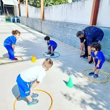
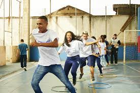
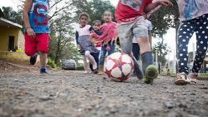
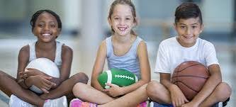
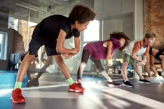
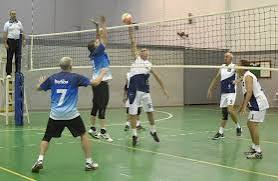
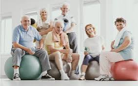
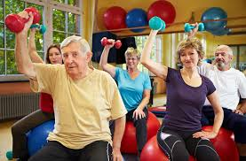
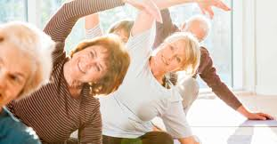
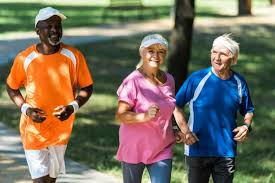
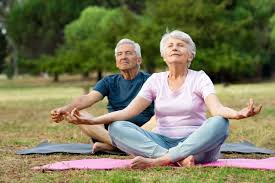
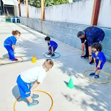
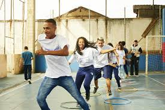
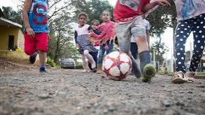
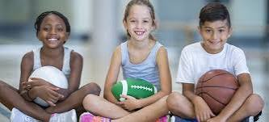
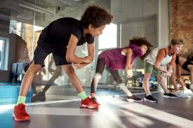
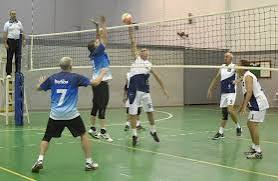
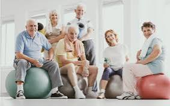
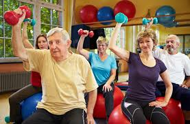
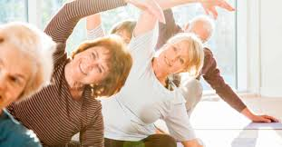
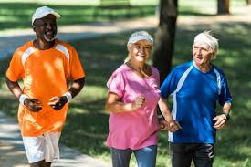
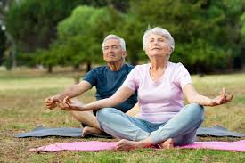